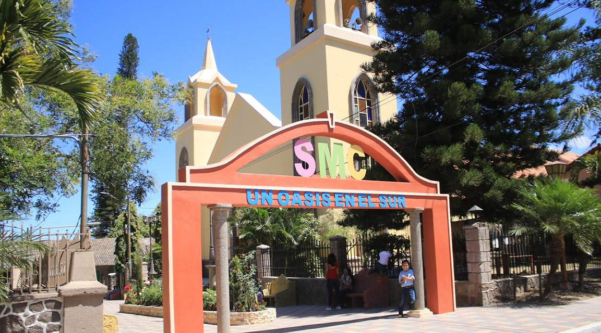
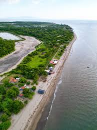
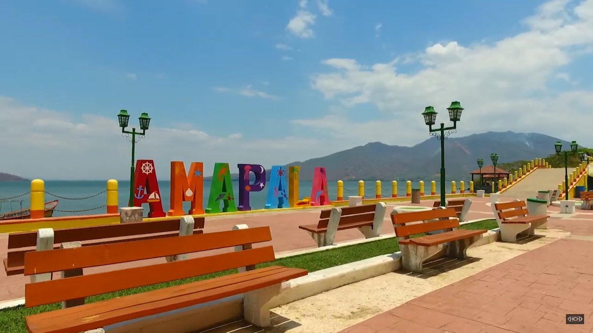
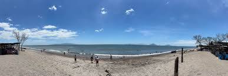
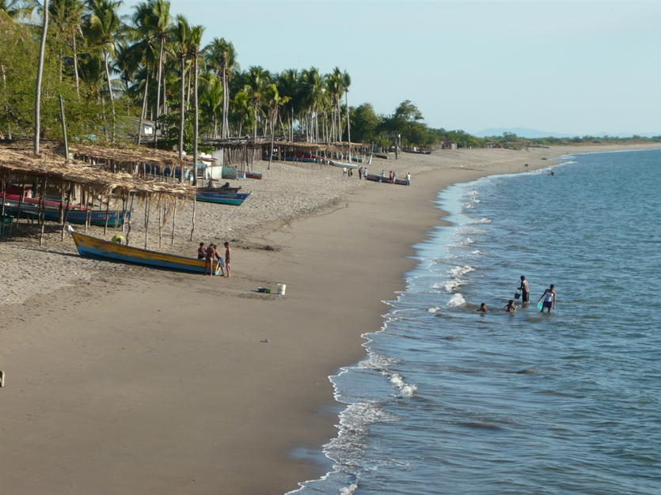
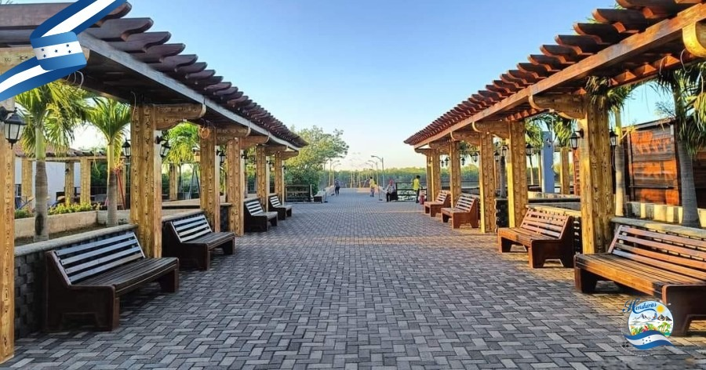

Un ecosistema extraordinario donde el manglar abraza el mar, la fauna silvestre prospera y la naturaleza se expresa en toda su plenitud.
La flora del sur de Honduras está adaptada a climas secos y altas temperaturas. Predominan bosques secos y vegetación costera que conviven en perfecta armonía con el ecosistema del Golfo de Fonseca.
La tortuga golfina llega a desovar en las playas del Golfo de Fonseca.
Isla volcánica con playas de arenas negras, miradores panorámicos y una atmósfera única en el Golfo de Fonseca.
Paseos en lancha por esteros y manglares, complementados con restaurantes especializados en mariscos frescos.
Playa muy visitada durante Semana Santa. Ambiente festivo y aguas cálidas del Golfo de Fonseca.
Playa tranquila y serena en el Golfo de Fonseca, ideal para quienes buscan descanso y naturaleza sin multitudes.
Playa de turismo local con acceso sencillo y ambiente familiar, apreciada por comunidades cercanas.
Zona montañosa con clima más fresco que contrasta con el calor costero. Naturaleza exuberante y temperatura agradable.
Declarado sitio RAMSAR de importancia internacional. Incluye manglares, esteros e islas que albergan una biodiversidad extraordinaria.
Protege varias islas y la fauna marina del golfo, asegurando la reproducción y conservación de especies costeras.
Área de manejo de hábitat con extensos manglares y una gran variedad de aves residentes y migratorias.
Importante humedal para aves acuáticas y fauna diversa. Ecosistema vital en el corredor ecológico del sur.
Área natural en Choluteca protegida por su riqueza en biodiversidad y la diversidad de ecosistemas que alberga.
Zona protegida para conservar el ecosistema de la isla volcánica y sus especies endémicas únicas del Golfo.
Sumérgete en la belleza del Golfo de Fonseca, uno de los ecosistemas más ricos de Centroamérica.





